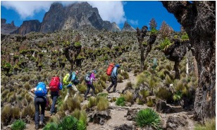

3-Day Jeep Safari at Nairobi National Park
If you are a wildlife enthusiast, taking a thrilling jeep safari in the Nationals Parks can be one of the best things to do in Kenya. There are hundreds of beautiful wildlife scenery to enjoy.Spot free-roaming wildlife at the edge of Nairobi on a Nairobi National Park game drive in an open-top safari vehicle. An early-morning departure means cooler temperatures and the chance to see the animals when they’re most active, prowling grassy plains and acacia bush with the dramatic backdrop of city skyscrapers.

- Get a real safari experience on a half-day tour from Nairobi
- Visit a national park that’s home to rhino, lions, giraffes, and more
- Airport drop-off option saves you a separate trip upon departure
- Convenient pickup and drop-off at Nairobi hotels
4-Day Hiking Experience on Mt. Kenya
If you enjoy hiking, taking a hiking tour to the famous mountains in Kenya would serve you best. Most national parks in Kenya and in neighboring Tanzania are very expensive, but the national parks in Kenya do not require a guide when hiking, unlike parks in Tanzania. This makes a huge difference in the cost for those who are budget conscience. Hiking the tallest mountain in Africa is impressive, but you’ll need a guide to tackle Mount Kilimanjaro. A hike up Mount Kenya is actually more challenging and many think it’s a more beautiful and dramatic mountain. And it is MUCH cheaper to climb. Hiking in Africa comes with a cost and climbing Mount Kenya is a great alternative to Kilimanjaro for those on a shoestring budget.
Expedition at the Village Market
Pay a visit to the magnificent retail complex of The Village Market in Nairobi and soak in its charming, sophisticated vibes. While you are at this retail space, you can shop your heart out for fashion and accessories from more than 150 domestic and international brands. You can also click some gorgeous pictures against the beautiful waterfalls and gardens. You can also enjoy bowling, play golf, and watch live music performances. You can even relish delicious international cuisines at the huge food court of The Village Market. If you are visiting the place with your kids, you can also go enjoy the fun water slides.

11-Day Diani Beach Resort
Famous for its white sand beaches, blue ocean and (kite)surfing. The beach is popular for relaxing resorts which are popular with honeymooners, backpackers and families on holiday. About an hour south of Mombasa, the sparkling white sands and lush greenery of Diani invite you to relax under a beach umbrella with a refreshing drink. Try a camel ride for the tourist experience or book a bike tour inland for a glimpse of life in local villages. Diani is also a base for several safari companies.

2-Day Road Trip to Lake Magadi
Road trips usually provide a good means to cool off after a tough week at work. These trips are fun and adventurous as many times colleagues and friends head out to places they have never been before. Many will enjoy cruising around with occasional picnic stops while the daring ones will go for activities like bungee jumping. These road trips are not always rosy, but the challenges encountered are the kind that found long-lasting friendships.

Lake Nakuru
Lake Nakuru is also a famous lake in Kenya, where the fresh water resources are very rich, and it is the main source of water in Kenya. The natural environment around here is very good, there are many wildlife inhabiting, and it is also a famous natural park in Kenya, which is worth a visit. Primarily known for its many species of birds, including vast numbers of pink flamingos, Lake Nakuru also has waterbucks, impalas, and hippopotamuses. Most people travel to Lake Nakuru National Park yearly just to experience the pink creatures that have almost turned the lake Nakuru pink. Watching these birds feed, have their flock flying sprees, play in the water and interact with other birds and the surrounding are some of the moments bird lovers look forward to when they visit Lake Nakuru National Park. The Flamingos in Lake Nakuru National Park, have always been there on lake Nakuru, there are barely any records of when the first group of flamingos was sighted on the lake, however since we know that flamingos are water birds and live wherever their food is available, we can assume they have been on lake Nakuru since time memorial because the lake flamingo food in abundance. Flamingos are beautiful creatures and you can be sure to find both the greater and lesser flamingos in Lake Nakuru National Park on Lake Nakuru. These birds are on the lake all through the day, month and year; so any time you visit the park; you will definitely find the amazingly beautiful pink flamingos enjoying the shores of Lake Nakuru.